Masuk Aplikasi (Login)
Halaman pertama saat aplikasi dibuka. Gunakan NIP atau ID pegawai untuk masuk.
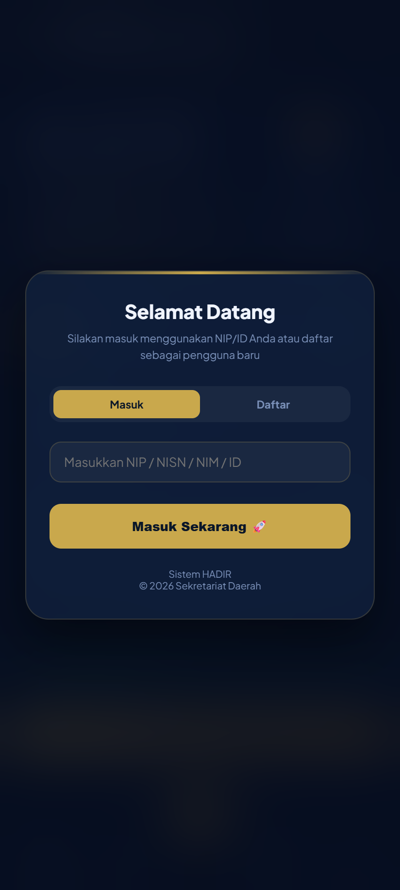
- Tahapan Penggunaan
- Buka aplikasi HADIR dari Telegram (Mini App) atau browser.
- Pastikan tab Masuk yang terpilih.
- Isi kolom NIP / NISN / NIM / ID dengan NIP Anda.
- Tekan tombol Masuk Sekarang 🚀.
- Pengguna baru: pilih tab Daftar untuk membuat akun terlebih dahulu.
Tab Absen (Halaman Utama)
Layar utama untuk mencatat kehadiran masuk dan pulang berbasis lokasi GPS.
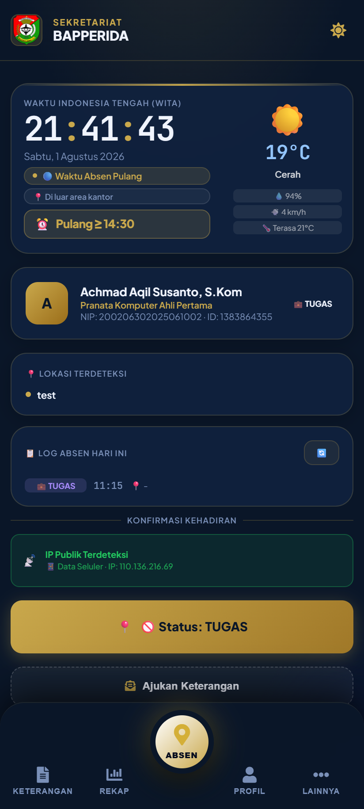
- Tahapan Penggunaan
- Buka tab Absen (ikon utama di bawah).
- Aktifkan GPS/lokasi pada perangkat dan pastikan berada dalam area kantor.
- Periksa status lokasi terdeteksi pada kartu Lokasi Terdeteksi.
- Tekan tombol 📍 Kirim Lokasi & Absen.
- Cek catatan pada Log Absen Hari Ini; tombol 🔄 untuk memuat ulang.
- Jika bekerja di lapangan, isi Keterangan Lokasi Lapangan lalu tekan 🏃 Pulang dari Lapangan.
Tab Keterangan
Mengajukan izin, sakit, atau tugas yang akan diperiksa admin.
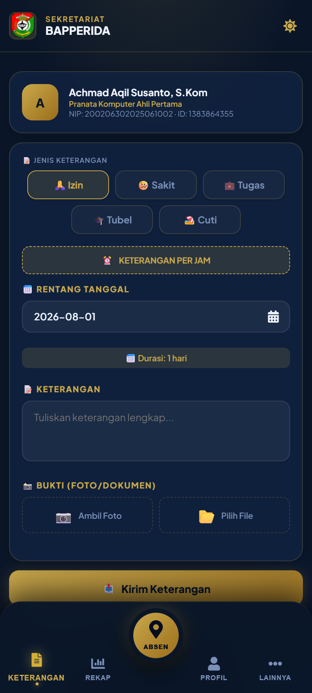
- Tahapan Penggunaan
- Buka tab Keterangan.
- Pilih jenis keterangan: 🙏 Izin, 🤒 Sakit, 💼 Tugas, 🎓 Tubel, atau 🏖️ Cuti.
- Tentukan rentang tanggal mulai–selesai.
- Tulis keterangan/alasan pada kolom yang disediakan.
- Lampirkan bukti (foto/dokumen) bila diperlukan.
- Tekan 📤 Kirim Keterangan, lalu pantau statusnya di Riwayat Pengajuan Saya.
Tab Rekap
Melihat rekap kehadiran pegawai per rentang tanggal dan mengekspor laporan.
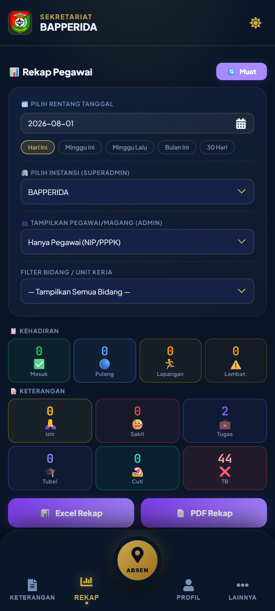
- Tahapan Penggunaan
- Buka tab Rekap.
- Pilih rentang tanggal atau tombol cepat: Hari Ini, Minggu Ini, Bulan Ini, dst.
- Pilih instansi dan filter bidang/unit kerja (khusus admin).
- Tekan Muat untuk menampilkan data kehadiran.
- Unduh laporan dengan 📊 Excel Rekap atau 📄 PDF Rekap.
Tab Profil
Data diri, verifikasi wajah, tanda tangan digital, dan riwayat absen pribadi.
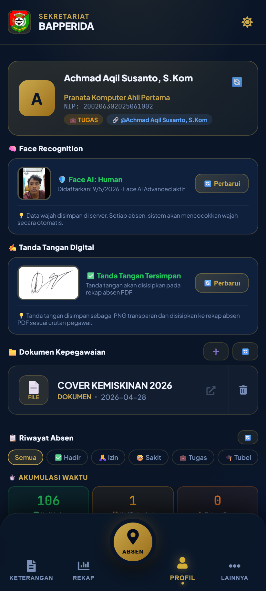
- Tahapan Penggunaan
- Buka tab Profil.
- Perbarui Face Recognition (data wajah) dengan tombol 🔄 Perbarui.
- Kelola ✍️ Tanda Tangan Digital untuk rekap PDF.
- Unggah 📁 Dokumen Kepegawaian bila diperlukan.
- Tinjau Riwayat Absen dan Akumulasi Waktu (hadir, terlambat, disiplin).
- Tekan 🚪 Keluar dari Akun ini untuk logout.
Tab Perjalanan Dinas
Membuat dan memantau penugasan/perjalanan dinas pegawai.
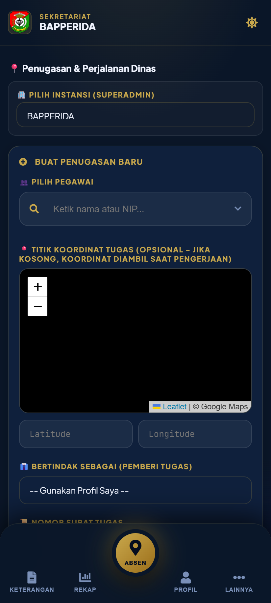
- Tahapan Penggunaan
- Buka LAINNYA lalu pilih Perjalanan Dinas.
- Tekan BUAT PENUGASAN BARU.
- Pilih pegawai dan tentukan titik koordinat tugas (opsional).
- Isi pemberi tugas, nomor surat, keterangan, tanggal, dan radius.
- Tekan 💾 Simpan Penugasan.
- Pantau status pada Monitoring Progres; konfirmasi dengan bukti bila tugas selesai.
Tab Rekap Lembur
Menarik data absen harian untuk menghitung rekap lembur pegawai.
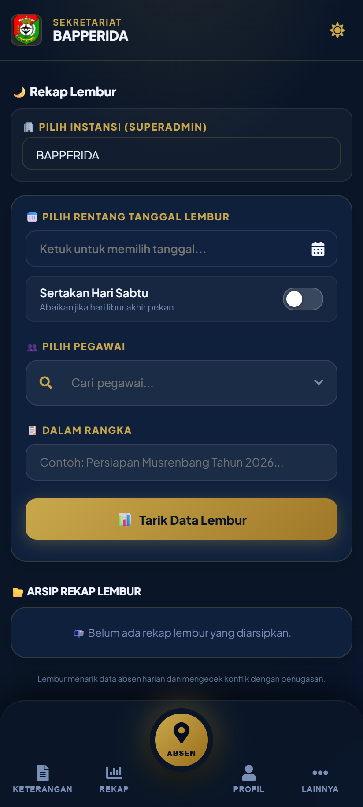
- Tahapan Penggunaan
- Buka LAINNYA lalu pilih Rekap Lembur.
- Pilih rentang tanggal lembur.
- Ceklis Sertakan Hari Sabtu bila hari Sabtu termasuk kerja.
- Pilih pegawai dan isi Dalam Rangka (perihal lembur).
- Tekan 📊 Tarik Data Lembur; rekap tersimpan pada Arsip Rekap Lembur.
Tab Aset (SIMAPO)
Katalog aset daerah untuk melihat, meminjam, dan melaporkan barang.
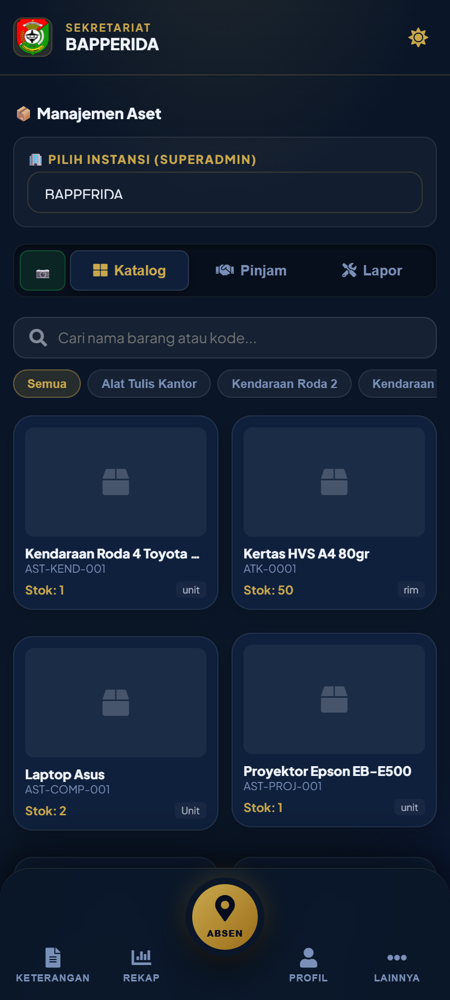
- Tahapan Penggunaan
- Buka LAINNYA lalu pilih Aset.
- Gunakan kolom Cari nama barang atau kode untuk mencari aset.
- Pilih tab Katalog untuk daftar barang, atau Pinjam untuk meminjam.
- Gunakan tab Lapor untuk melaporkan kerusakan barang.
Panel Admin
Khusus pengguna dengan peran admin/superadmin. Akses melalui LAINNYA → Panel Admin. Terdiri dari empat bagian: Operasional, Kepegawaian, Konfigurasi, dan Inventaris.
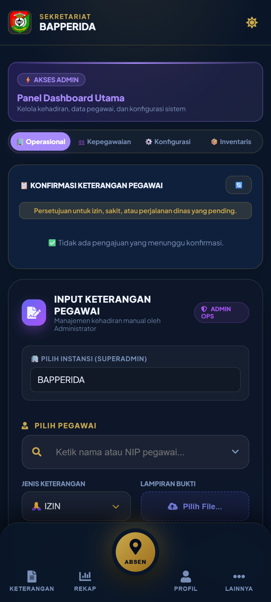
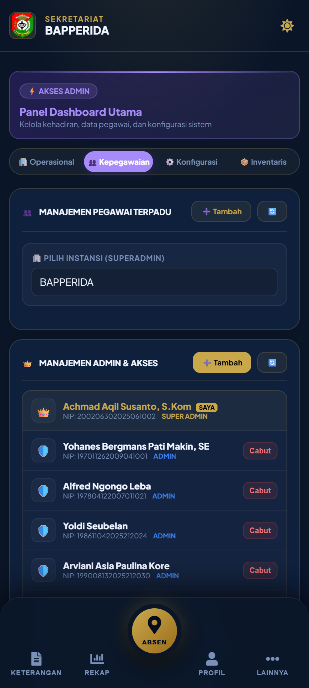
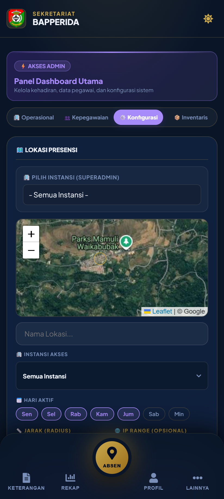
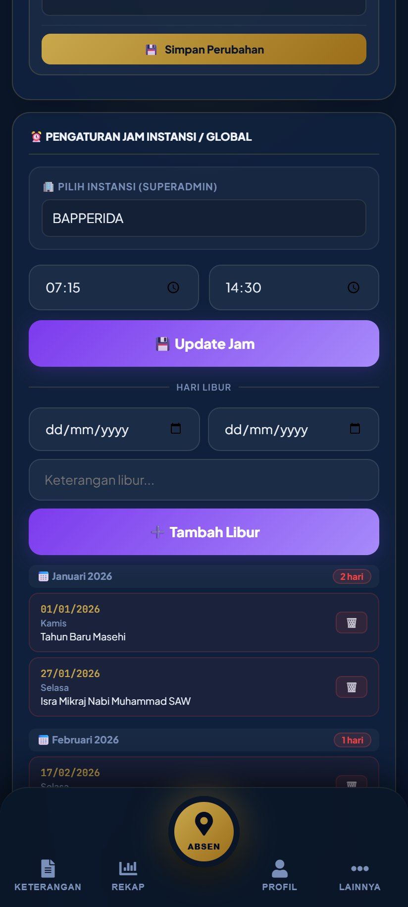
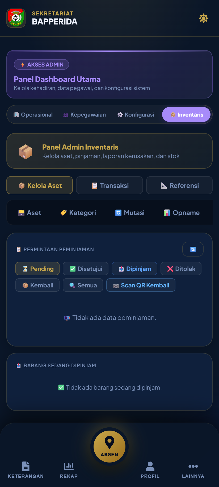
- Tahapan Penggunaan (Operasional)
- Buka 🏢 Operasional untuk melihat konfirmasi keterangan pegawai yang pending.
- Gunakan Input Keterangan Pegawai untuk mencatat kehadiran manual.
- Aktifkan 🖥️ Meja Absen untuk scan wajah kehadiran di tempat.
- Tahapan Penggunaan (Kepegawaian)
- Buka 👥 Kepegawaian → Manajemen Pegawai Terpadu.
- Tekan ➕ Tambah untuk menambah pegawai; pilih instansi di filter.
- Kelola Manajemen Admin & Akses — beri atau cabut peran (Super Admin/Admin/Kepala/Kabid).
- Tahapan Penggunaan (Konfigurasi)
- Buka ⚙️ Konfigurasi → daftarkan titik lokasi presensi di peta.
- Atur radius, hari aktif, IP range, dan instansi akses tiap titik, lalu 💾 Simpan Perubahan.
- Atur jam masuk/pulang instansi dan tambah hari libur.
- Kelola periode jam khusus dan Face Settings (liveness, threshold).
- Tahapan Penggunaan (Inventaris)
- Buka 📦 Inventaris → kelola aset, kategori, mutasi, dan opname.
- Pantau permintaan peminjaman (Pending → Disetujui → Dipinjam → Kembali).
- Gunakan 📷 Scan QR Kembali untuk proses pengembalian barang.